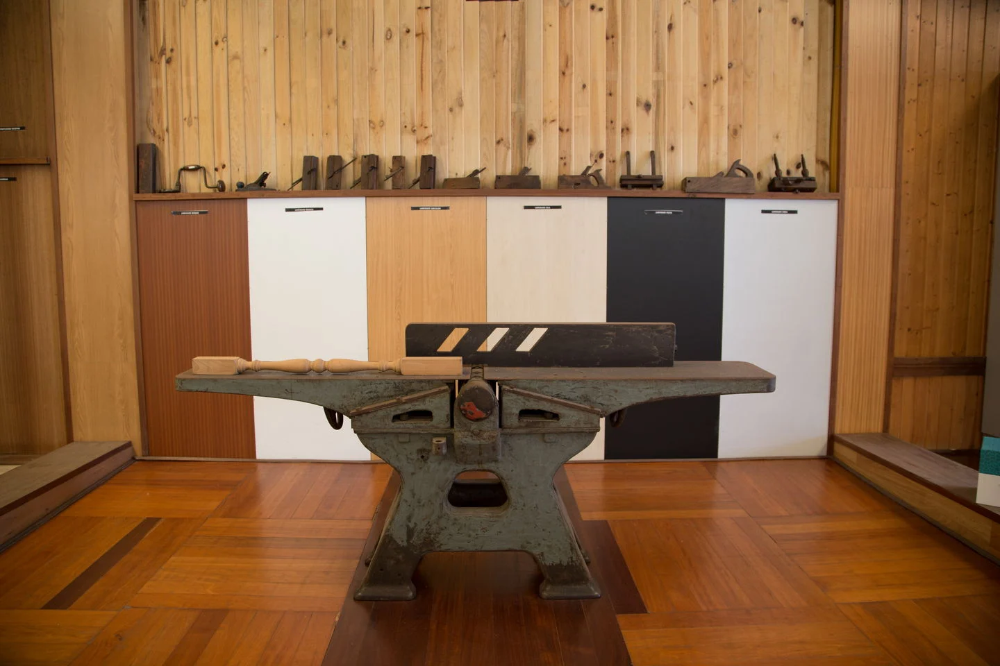
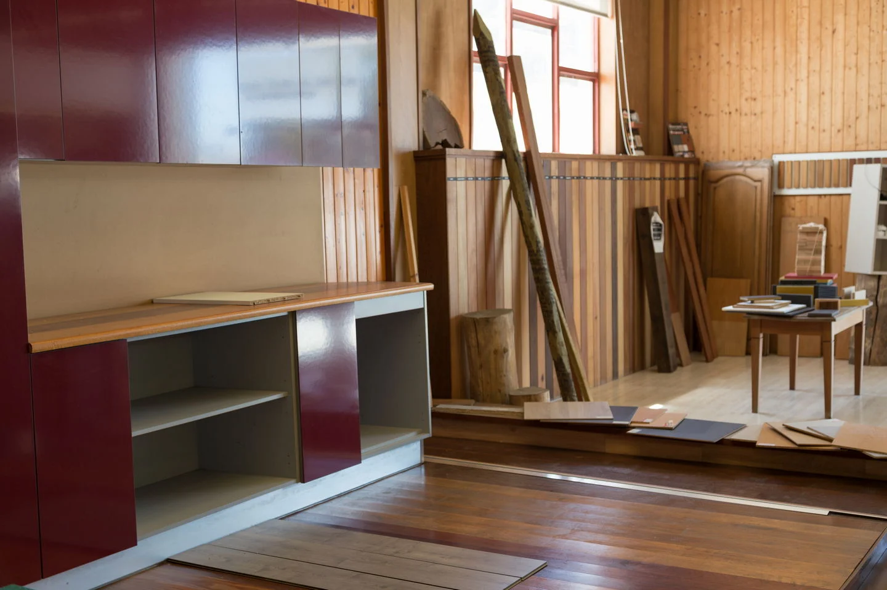
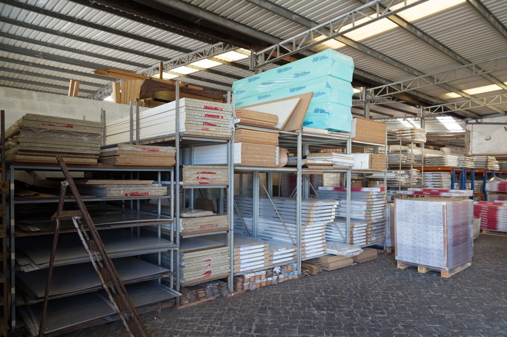

EMPRESA & INSTALAÇÕES
Madeira faz parte
da nossa história.
Uma empresa portuguesa de cariz familiar, com origem em 1962.
Da carpintaria ao comércio de materiais.
A Joaquim Vicente & Vicente nasceu ligada às empreitadas de carpintaria, à serração e ao comércio de derivados de madeira. Hoje, a oferta reúne madeiras, painéis, pavimentos, isolamentos, colas e serviços de corte.
As instalações em Moreira, Maia, ficam junto à zona industrial Maia I e aos acessos à A28, A41 e EN14.
Localização e contactos


